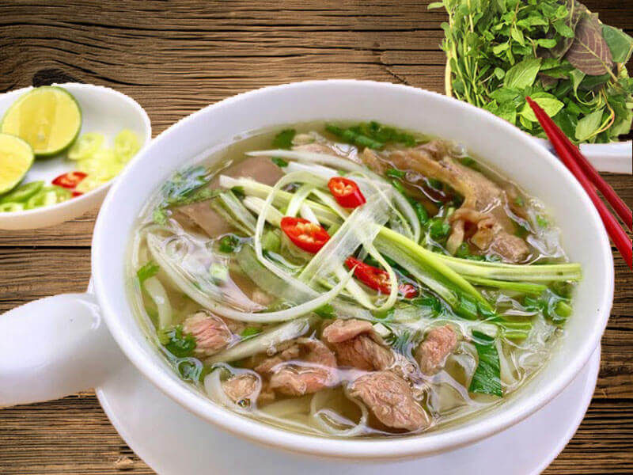

Pho

Description
For a long time, Pho is a traditional dish that contributes to bringing Vietnam further on the world culinary map. Pho comes from folklore, starting as street vendors serving the poor, then gradually ascending the throne to sell in shops, shops and restaurants. Born in the Red River Delta and moved to the South with the flow of migrants.
Nowadays, not only in Vietnam but you can also enjoy beef noodle soup in many countries around the world. Pho has become the choice of Vietnamese people for breakfast, even lunch, dinner… To cook delicious beef noodle soup, you only need a few tips and tricks to be successful.
Ingredients
- 2kg beef bone
- 1.2kg beef fillet
- 0.7kg corned beef
- 1kg noodle cake
- 400g onion
- 200g lemongrass
- Purple onion
- Ginger
- Herbs in broth: dried cinnamon, cardamom, tangerine peel, star anise, cloves, coriander seeds
- Vegetables served: scallions, cilantro, coriander, lemon, chili, basil, braised vegetables
- Spices for beef noodle soup: salt, fish sauce, seasoning, rock sugar
Steps
-
Process materials
- Peeled onion, 1 part thinly sliced, 1 part cut areca
- Wash coriander, cut into small pieces.
- Green onions, keep the head of the onion separate, the leaves are finely chopped
- The accompanying vegetables are washed and dried.
-
Broth Seasoning Package
- You put dried cinnamon, cardamom, tangerine peel, star anise, cloves, coriander seeds into a cloth bag, tie it tightly.
-
Cook Pho Broth
- Wash beef bones. Put a pot of water on the stove with a little lemongrass and bring to a boil. Put the bones in the blanching to get rid of the bad smell.
- Take out the blanched bones, put them in a tray with ginger, red onion, and onion cut into areca, and bake until the bones are golden, take the bones out of the oven, and immediately put them in a bowl of ice water.
- Bring a pot of water to a boil, put the grilled beef bones, the seasoning packet, the grilled onion, ginger, and lemongrass into the pot of water. Stew the bones for about 5-6 hours for fresh water. While the bones are stewing, add the beef and cook until cooked. Note that when the beef is cooked, take it out immediately, if it is left for too long, the meat will become soft. Then remove the ingredients, filter the broth.
- Put the pot of filtered broth on the stove, season with a little salt, monosodium glutamate, seasoning, rock sugar to taste, bring to a boil and turn off the stove.
-
Present And Enjoy
- Beef fillet washed, thinly sliced.
- Thinly sliced corned beef.
- Blanch the bean sprouts and onion heads in boiling water.
- Blanch rice noodles in boiling water.
- Put the bean sprouts, onion head, and rice noodle in a bowl, arrange beef, fillet, scallions, cilantro, onion, sliced chili and then add broth.
- You enjoy pho with accompanying vegetables, chili sauce, black sauce.
References
- Ingredients and Steps from here.
- Translated using Google Translate.